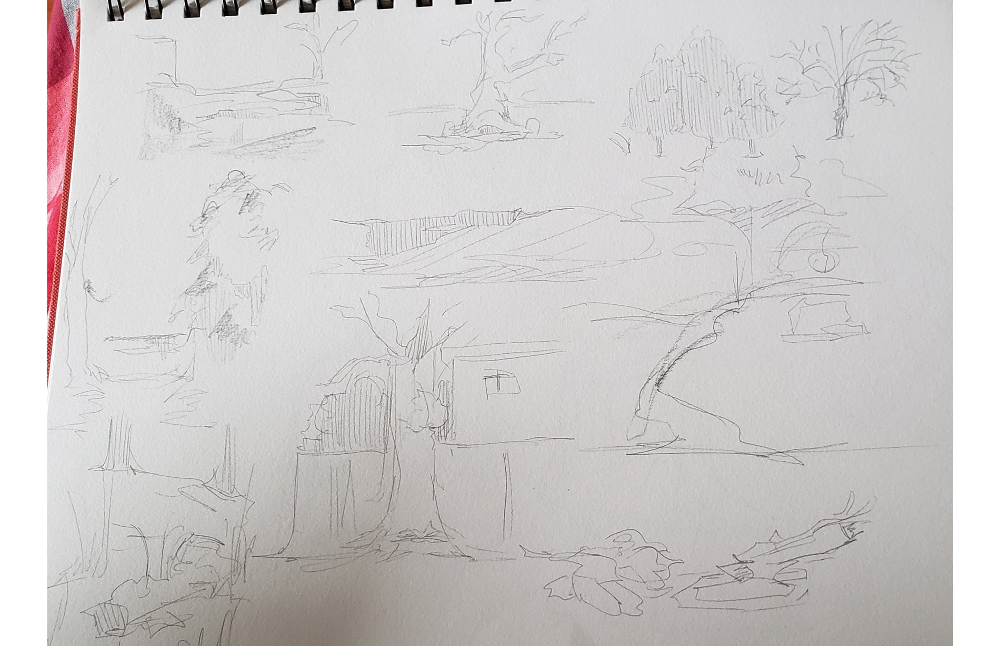

For this school project I was tasked with observing and capturing my surroundings and relaying it back onto the canvas within a plein-air portfolio scenario. I used this opportunity to experiment with texture, matte painting, colour palettes, and composition.
Our first objective within this class was to identify our strengths and weaknesses trying to break away from what we were familiar with.
For the first prompt, I wanted to work on my shape language and colour palette. Alongside the photos and sketches taken from my walk, I also compiled supplementary images of deserts and canyons to help me with my ideas.
After a few rounds of paint overs and discussion we decided to settle on the following character; the Curious Time Traveler.
The first painting is a combination of a desert, canyon, and foliage put together. Using the ideas of the cracks within potholes and the gaping chasms of canyons I wanted to show a sense of desolation and profoundness within this composition.
The second walk was taken from my local neighbourhood, paying close attention to the different ways people have decorated their own homes. The houses that I passed by on my walk held many intricate shapes within its architecture which allowed me to formulate the next idea for my painting.
Using a combination of the different houses I witnessed and the shapes within their architecture, I created my second painting based on my neighbourhood surroundings.
Finally for my third walk I visited a local flower shop that I would often pass by whenever I went to attend errands. I took this chance to explore the shop in more detail and used the setting for my third painting.
During my observations I noticed that light would always pool into the store during different times of the day at a specific angle. I decided to relay this into my painting to show a sense of whimsical discovery.